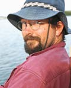

Keynotes
Luke Rendell
Three Questions in Cultural Evolution
In this talk I will use three recent publications to briefly highlight three questions that I think are pressing in current research on cultural evolution, at least from my own broadly comparative perspective and background in biology. I hope they will also be of interest to artificial life researchers thinking about cultural processes: 1) How important an evolutionary force is gene-culture evolution outside humans? I will discuss a recent review suggesting that co-evolutionary processes involving interactions between genetic and cultural inheritance, which are well established in humans, might be more taxonomically widespread than previously thought. I will also briefly discuss how we are using agent-based simulation models to study cultural evolution in humpback song. 2) Precisely how does collective cumulative cultural evolution work? I will introduce this question by presenting work from my group on fine-scale study of cumulative progress in computer coding contests, which represent intriguing meso-scale laboratories of cumulative cultural evolution, a hugely powerful process apparently confined in any large scale to humans. 3) How can models of cultural processes help us improve conservation outcomes? Researchers studying a range of animal societies have begun arguing that understanding and accounting for cultural processes in conservation management policy is necessary. I will briefly outline these arguments and discuss the associated challenges, some of which may be amenable to simulation modelling.
TBA
Bio
Luke is a Reader in Biology supported by the Marine Alliance for Science and Technology Scotland. He is affiliated with the Scottish Ocean Institute, Sea Mammal Research Unit, the Centre for Biological Diversity, the Centre for Social Learning and Cognitive Evolution, and the Institute of Behavioural and Neural Sciences. Luke has broad research interests, largely centered around the evolution of learning, behaviour and communication, with a special focus on marine mammals.
Alan Winfield
Experiments in Artificial Theory of Mind
Theory of mind is the term given by philosophers and psychologists for the ability to form a predictive model of self and others. In this talk I will advance the hypothesis that simulation-based internal models offer a powerful and realisable, theory-driven basis for artificial theory of mind. Proposed as a computational model of the simulation theory of mind, our simulation-based internal model equips a robot with an internal model of itself and its environment, including other dynamic actors, which can test (i.e. simulate) the robot's next possible actions and hence anticipate the likely consequences of those actions both for itself and others. I will present a series of experiments which each demonstrate some aspect of artificial theory of mind (AToM): the first experiments show that a robot equipped with AToM is safer than one without, the second demonstrate minimally ethical robots, the third robots that can imitate goals, and the fourth robots capable of telling each other stories.
Bio
Alan's work at UWE spans Research and Public Engagement. He conducts research in Cognitive Robotics within the Bristol Robotics Lab. He is a member of the Science Communication Unit, and undertakes public engagement work centred upon robotics. Robot ethics is a significant focus of Alan's current work, including the development of new standards.